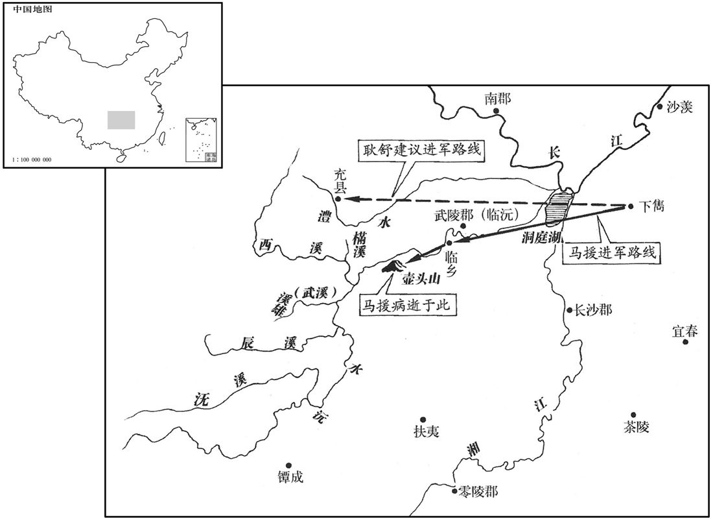

公元49年资治通鉴：本年记事、原文与白话对照
按原书编年位置阅读；追叙和史论不等于本年发生的事件。白话采用所据译本，缺译不以生成译文补齐。
卷44 · 本年记事
公元49年 · 汉世祖光武皇帝建武二十五年
二十五年〔（己酉、四九）〕
本年事件索引（现代整理）

本年形势与背景参考图
春，正月，辽东徼外貊人寇边，〔徼，古吊翻。貊，莫百翻。〕太守祭肜招降之。〔降，户江翻。〕肜又以财利抚纳鲜卑大都护偏何，使招致异种，骆驿款塞。〔种，章勇翻。骆驿，相继也。款，叩也，至也。〕肜曰：「审欲立功，当归击匈奴，斩送头首，乃信耳。」偏何等即击匈奴，斩首二千余级，持头诣郡。其后岁岁相攻，辄送首级，受赏赐。自是匈奴衰弱，边无寇警，鲜卑、乌桓并入朝贡。〔朝，直遥翻。〕肜为人质厚重毅，抚夷狄以恩信，故皆畏而爱之，得其死力。
春季，正月，辽东郡塞外的貊人侵犯边境，太守祭肜招诱他们归降。祭肜还用财物来安抚结纳鲜卑首领偏何，让他招集其他外族部落，陆续到边塞归降。祭肜说：“你们要是真想立功，就应当回去打匈奴，斩下匈奴首领的头送来，我才会信任你们。”偏何等就去攻打匈奴，斩杀二千余人，将人头献到辽东郡官府。此后，他们每年都去打匈奴，送来人头，接受赏赐。匈奴势力从此衰落，而汉王朝边境不再有敌侵的警报，鲜卑、乌桓一同入朝进贡。祭肜为人质朴敦厚，沉着坚毅，用恩惠和信义招抚外族，因此外族对他既怕又爱，拼死效力。
南单于遣其弟左贤王莫〔莫者，左贤王之名。〕将兵万余人击北单于弟薁鞬左贤王，生获之；北单于震怖，〔怖，普有翻。〕却地千余里。北部薁鞬骨都侯与右骨都侯率众三万余人归南单于。三月，南单于复遣使诣阙贡献，求使者监护，〔复，扶又翻。监，古衔翻。〕遣侍子，修旧约。〔旧约，宣帝旧约。〕
南单于派他的弟弟左贤王莫率兵一万余众进攻北单于的弟弟左贤王，将他生擒。北单于十分震恐，后撤了一千余里。北匈奴所属的骨都侯和右骨都侯带领三万余人归附南单于。三月，南单于再度遣使者到朝廷进贡，请汉朝派使者进行监护，并要求将王子送到汉朝作人质，重修旧日和约。
戊申晦，日有食之。
三月戊申晦（二十九日），出现日食。
马援军至临乡，〔水经注：武陵郡沅南县，建武中所置县，在沅水之阴，因此沅南为名，县治故城，昔马援讨临乡□筑也。〕击破蛮兵，斩获二千余人。
马援的军队到达临乡，攻破蛮兵，斩杀、俘获二千余人。
初，援尝有疾，虎贲中郎将梁松来候之，〔虎贲中郎将，掌虎贲郎。贲，音奔。〕独拜下，援不答。松去后，诸子问曰：「梁伯孙，帝伲，〔梁松，字伯孙，尚帝女舞阴公主。尔雅曰：女子之夫为伲。〕贵重朝廷，公卿已下莫不惮之，大人柰何独不为礼﹖」援曰：「我乃松父友也，虽贵，何得失其序乎！」
起初，马援曾经患病，虎贲中郎将梁松前往探望。梁松独自在床下拜见，而马援没有还礼。梁松走后，马援的儿子们问道：“梁伯孙是皇上的女婿，朝廷显贵，公卿以下的官员没有不惧怕他的，为何唯独您对他不礼敬？”马援答道：“我是他父亲的朋友，他身份虽贵，可怎能不讲辈份呢？”
援兄子严、敦并喜讥议，〔贤曰：喜，许吏翻。〕通轻侠，援前在交趾，还书诫之曰：「吾欲汝曹闻人过失，如闻父母之名，耳可得闻，口不可得言也。好论议人长短，〔好，呼到翻；下同。〕妄是非政法，〔贤曰：谓讥刺时政也。〕此吾所大恶也；宁死，不愿闻子孙有此行也。〔恶，乌路翻。行，下孟翻；下同。〕龙伯高敦厚周慎，口无择言，谦约节俭，廉公有威，吾爱之重之，愿汝曹效之。杜季良豪侠好义，忧人之忧，乐人之乐，〔乐，音洛。〕父丧致客，数郡毕至，吾爱之重之，不愿汝曹效也。效伯高不得，犹为谨敕之士，所谓『刻鹄不成尚类鹜』者也；〔贤曰：鹜，鸭也。鹜，莫卜翻。毛晃曰：舒凫俗谓之鸭，可畜而不能高飞者曰鸭，野生而高飞者曰鹜。〕效季良不得，陷为天下轻薄子，所谓『画虎不成反类狗』者也。伯高者，山都长龙述也；〔龙，姓；述名。贤曰：山都，县名，属南阳郡，旧南阳之赤乡，秦以为县，故城在今襄州义清县东北。长，知两翻。〕季良者，越骑司马杜保也；〔百官志：越骑校尉，其属有司马，秩千石。〕皆京兆人。会保仇人上书，讼「保为行浮薄，乱群惑众，伏波将军万里还书以诫兄子，而梁松、窦固与之交结，将扇其轻伪，败乱诸夏。」〔败，补迈翻。〕书奏，帝召责松、固，以讼书及援诫书示之，松、固叩头流血，而得不罪。诏免保官，握拜龙述为零陵太守。〔贤曰：零陵，今永州。守，式又翻。〕松由是恨援。
马援的侄子马严、马敦都爱发议论，结交游侠。马援先前在交趾时，曾写信回家告诫他们：“我希望你们在听到他人过失的时候，就像听到自己父母的名字一样，耳可以听，而口却不能讲。好议论他人是非，随意褒贬时政和法令，这是我最厌恶的事情。我宁可死，也不愿听到子孙有此类行径。龙伯高为人宽厚谨慎，言谈合乎礼法，谦恭而俭朴，廉正而威严，我对他既敬爱，又尊重，希望你们效法他。杜季良为人豪侠仗义，将别人的忧虑当作自己的忧虑，将别人的快乐当作自己的快乐。他父亲去世开吊，几郡的客人全来了。我对他又敬爱又尊重，却不希望你们效法他。效法龙伯高不成，还可以做恭谨之士，正如人们所说的‘刻鸿鹄不成还象鸭’；若是效法杜季良不成，就会堕落成天下的轻浮子弟，正如人们所说的‘画虎不成反似狗’了。”龙伯高，即山都县长龙述；杜季良，即越骑司马杜保，两人都是京兆人。适逢杜保的仇人上书，指控杜保：“行为浮躁，蛊惑人心，伏波将军马援远从万里之外写信回家告诫侄儿不要与他来往，而梁松、窦固却同他结交，对他的轻薄伪诈行为煽风点火，败坏扰乱国家。”奏书呈上，光武帝召梁松、窦固责问，出示指控的奏书和马援告诫侄儿的书信。梁松、窦固叩头流血，才未获罪。诏命免去杜保官职，将龙述擢升为零陵太守。梁松由此憎恨马援。
及援讨武陵蛮，军次下隽，〔贤曰：下隽县名，属长沙国，故城在今辰州沅陵县。宋白曰：岳州巴陵县，汉地理地，下隽县，属长沙郡，在今鄂州蒲圻县界，即此地。按水经，江水东至长沙下隽县北，澧水、资水、沅水合，东流注之，则宋说为是，贤说非。隽，子兖翻。〕有两道可入，从壶头则路近而水崄，〔水经注：夷水南出夷山，北流注沅。夷山，东接壶头山，山下水际有马援停军处。贤曰：壶头山在今辰州沅陵东。〕从充则涂夷而运远。〔贤曰：充，县名，属武陵郡。充，昌容翻。〕耿舒欲从充道；援以为弃日费粮，不如进壶头，搤其喉咽，〔搤，持也。咽，音烟；候龙也。〕充贼自破；以事上之，〔上，时掌翻；下同。〕帝从援策。进营壶头，贼乘高守隘，水疾，船不得上；会暑甚，士卒多疫死，援亦中病，乃穿岸为室以避炎气。〔武陵记曰：壶头山边有石窟，即援所穿室也。中，竹仲翻。〕贼每升险鼓噪，援辄曳足以观之，左右哀其壮意，莫不为之流涕。〔为，于伪翻。〕耿舒与兄好时候弇书曰：〔好时县，属扶风。时，音止。〕「前舒上书当先击充，粮虽难运而兵马得用，军人数万，争欲先奋。今壶头竟不得进，大众怫郁行死，〔师古曰：怫郁，忧不乐也。怫，符弗翻。怫郁，气蕴积而不得舒也。行死，谓行将疫死也。〕诚可痛惜！前到临乡，贼无故自致，若夜击之，即可殄灭，伏波类西域贾胡，到一处辄止，〔贤曰：言似商胡，所至之处辄停留也。贾，音古。〕以是失利。今果疾疫，皆如舒言。」弇得书奏之，帝乃使梁松乘驿责问援，因代监军。〔监，古衔翻。〕
到后来，马援征讨武陵蛮人，大军到达下隽。有两条道路可入蛮界：一从壶头，这条路近而水势深险；一从充县，这条路是坦途，但运输线太长。耿舒主张走充县，马援却认为那样会消耗时日和军粮，不如进军壶头，扼住蛮人咽喉，则充县之敌将不攻自破。两种意见上报朝廷，光武帝批准了马援的战略。于是汉军进兵壶头。蛮贼登高，把守险要，水流湍急，汉军舰船不能上行。适逢酷暑，很多士兵患瘟疫而死，马援也被传染，于是在河岸凿窟栖身以避暑热。每当蛮贼爬到高处擂鼓呐喊，马援便蹒跚跛行着察看敌情，左右随从无不为他的壮志所感而哀痛流泪。耿舒在给他哥哥好侯耿的信中写道：“当初我曾上书建议先打充县，尽管粮草运输困难，但兵马前进无阻，大军数万，人人奋勇争先。而如今竟在壶头滞留，官兵忧愁抑郁，行将病死，实在令人痛惜！前在临乡，敌兵无故自来，如果乘夜出击，就可以将他们全歼。但马援就像个作生意的西域商人，所到之处，处处停留，这就是 失利的原因。现在果然遇到了瘟疫，完全同我预言的一样。”耿收到信后上奏朝廷，于是光武帝派梁松乘驿车前去责问马援，并就此代理监军事务。
会援卒，松因是构陷援。帝大怒，追收援新息侯印绶。〔郡国志：新息，侯国，属汝南郡。应劭曰：古息国，其后东徙，加「新」字。〕初，在交趾，常饵薏苡，〔神农本草经曰：薏苡味甘，微寒，主风湿痹，下气，除�为岳葬臐A久服轻身益气。〕实能轻身，胜障气，〔障，与瘴同。〕军还，载之一车。及卒后，有一书谮之者，以为前所载还皆明珠文犀。〔文犀，犀之有文彩者。〕帝益怒。
正当此时，马援去世，梁松乘机陷害马援。光武帝大怒，下令收回马援的新息侯印信。当初，马援在交趾时经常服食薏苡仁，因为此物可使身体轻健，抵御瘴气。班师时，曾载回了一车。等到马援死后，却有人上书诬告他当初用车载的全是上好的珍珠和犀角。于是光武帝益发愤怒。
援妻孥惶惧，〔孥，音奴，子也。〕不敢以丧还旧莹，葬域西，〔贤曰：，草也，以不归旧茔，时权葬，故称。马援传作「城西」。章：乙十一行本正作「城西」。张校云：「域」作「城」，误。说文曰：茔，墓地。广雅曰：茔域，葬地也。〕宾客故人，莫敢吊会。〔不敢吊及会葬。〕严与援妻子草索相连，诣阙请罪。〔索，昔各翻。〕帝乃出松书以示之，方知所坐，上书诉冤，前后六上，辞甚哀切。〔上，时掌翻；下同。〕
马援的妻子儿女又慌又怕，不敢将马援的棺柩运回祖坟，便草草葬在城西。他门下的宾客旧友，没有人来祭吊。马严和马援的妻子把自己用草绳捆绑起来，连在一起，到皇宫门口请罪。于是光武帝拿出梁松的奏书给他们看，他们方才得知马援的罪名，便上书鸣冤，前后共六次，情辞十分哀伤悲切。
前云阳令扶风朱勃〔云阳县，属左冯翊，有秦云阳宫。钩弋夫人葬云阳，昭帝为起云陵邑，后为县。〕诣阙上书曰：「窃见故伏波将军马援，拔自西州，钦慕圣义，间关险难，〔难，乃旦翻。〕触冒万死，经营陇、冀，〔谓征隗嚣时也。〕谋如涌泉，势如转规，〔规，圆也。〕兵动有功，师进辄克。诛锄先零，飞矢贯胫；〔零，音怜。建武十一年，援击破先零，飞矢贯胫。胫，形定翻。〕出征交趾，与妻子生诀。〔征交趾事见上卷十七年、十八年、十九年。〕间复南讨，〔复，扶又翻。〕立陷临乡，师已有业，〔业，绪也。〕未竟而死；吏士虽疫，援不独存。夫战或久而立功，或以速而致败，深入未必为得，不进未必为非，人情岂乐久屯绝地不生归哉！〔乐，音洛。〕惟援得事朝廷二十二年，北出塞漠，〔谓讨乌桓。〕南渡江海，触冒害气，僵死军事，名灭爵绝，国土不传，海内不知其过，众庶未闻其毁，家属杜门，葬不归墓，怨隙并兴，宗亲怖栗，〔怖，普布翻。〕死者不能自列，生者莫为之讼，〔为，于伪翻。〕臣窃伤之！夫明主醲于用赏，约于用刑，高祖尝与陈平金四万斤以间楚军，不问出入所为，〔事见十卷高帝三年。间，古苋翻。〕岂复疑以钱谷间哉！〔复，扶又翻。〕愿下公卿，平援功罪，宜绝宜续，以厌海内之望。」〔下，遐稼尔。厌，一叶翻。〕帝意稍解。
前任云阳县令、扶风人朱勃前往皇宫门阙上书说：“我看见已故的伏波将军马援，从西州崛起，钦敬仰慕皇上圣明仁义，历经艰险，万死一生，在陇、冀两地征战。他的智谋如泉水一样喷涌不绝，行动如转动圆规一样灵活迅速。他用兵战无不胜，出师攻无不克。剿伐先零时，飞箭曾射穿他的小腿；出征交趾时，以为此行必死，曾与妻儿诀别。过了不久又再度南征，很快攻陷临乡，大军已经建立功业，但未完成而马援先死。军官士兵虽然遭受瘟疫，而马援也没有独自生还。战争有以持久而取胜的，也有因速战而败亡的；深入敌境未必就正确，不深入也未必为不对。论人之常情，难道有乐意久驻危险之地不生还的吗？马援得以为朝廷效力二十二年，在北方出塞到大漠，在南方渡江漂海。他触冒瘟疫，死在军中，名声被毁，失去爵位，封国失传。天下不知他所犯的过错，百姓不知对他的指控。他的家属紧闭门户，遗体不能归葬祖坟。对马援的怨恨和嫌隙一时并起，马氏家族震恐战栗。已死的人，不能自己剖白；活着的人，不能为他分辩，我为此感到痛心！圣明的君王重于奖赏，轻于刑罚。高祖曾经交给陈平四万斤金用以离间楚军，并不问账目与用途，又岂能疑心那些钱谷的开销呢？请将马援一案交付公卿议论，评判他的功罪，决定是否恢复爵位，以满足天下人的愿望。”光武帝之怒稍有消解。
初，勃年十二，能诵诗、书，常候援兄况，辞言娴雅，〔贤曰：娴，音闲。娴雅，犹言沈静也；余谓娴，习也。屈原传：娴于辞令。〕援裁知，见之自失。况知其意，乃自酌酒慰援曰：「朱勃小器速成，智尽耳，卒当从汝禀学，〔卒，子恤翻；终也。贤曰：禀，受也。〕勿畏也。」勃未二十，右扶风请试守渭城宰。〔前书音义曰：试守者，试守一岁乃为真，食其全俸。贤曰：渭城，县名，故城在今咸阳县东北。〕及援为将军封候，而勃位不过县令。援后虽贵，常待以旧恩而卑侮之，勃愈身自亲。及援遇谗，唯勃能终焉。
起初，朱勃十二岁时就能背诵《诗经》、《书经》，经常拜望马援之兄马况，言辞温文尔雅。当时马援才开始读书，看到朱勃，他自况不如，若有所失。马况觉出了马援的心情，就亲自斟酒安慰他说：“朱勃是小器，早成，聪明才智尽此而已，他最终将从学于你，不要怕他。”朱勃还不到十二岁，右扶风便试用他代理渭城县宰。而等到马援做了将军并封侯的时候，朱勃的官位还不过是个县令。马援后来虽然身居显贵，仍然常常以旧恩照顾朱勃，但又卑视和怠慢他，而朱勃本人的态度却愈发亲近。及至马援受到诬陷。唯有朱勃能够最终保持忠诚不渝。
谒者南阳宗均监援军，〔「宗均」，列传作「宋均」。赵明诚金石录有汉司空宗俱碑。按后汉宋均传：均族子意，意孙俱，灵帝时为司空。余尝得宗资墓前碑龟膊上刻字，因以后汉帝纪及姓苑、姓纂诸书参考，以谓自均以下，其姓皆作「宗」，而列传转写为「宋」，误也。后得此碑，益知前言之不缪。〕援既卒，军士疫死者太半，蛮亦饥困。均乃与诸将议曰：「今道远士病，不可以战，欲权承制降之，何如﹖」诸将皆伏地莫敢应。〔降，户江翻。〕均曰：「夫忠臣出竟，有可以安国家，专之可也。」〔公羊传曰：聘礼，大夫受命不受辞，出境有可以安社稷，全国家者，则专之可也。竟，读曰境。〕乃矫制调伏波司马吕种守沅陵长，〔调，徒吊翻。〕命种奉诏书入虏营，告以恩信，因勒兵随其后。蛮夷震怖，冬十月，共斩其大帅而降。〔帅，所类翻。〕于是均入贼营，散其众，遣归本郡，为置长吏而还，〔为，于伪翻。还，从宣翻，又如字。〕群蛮遂平。均未至，先自劾矫制之罪；〔劾，户概翻，又户得翻。〕上嘉其功，迎，赐以金帛，令过家上耱。〔受命而出，未复命则不当先过家，今使过家上耱，所以示宠荣也。上，时掌翻。〕
谒者、南阳人宗均任马援大军的监军。马援去世后，官兵因瘟疫而死的已超过半数，蛮军也饥困交迫。于是宗均同将领们商议道：“我们如今道路遥远，官兵染疾，不可以再作战了，我打算权且代表皇上发布命令招降敌人，怎么样？”将领们全都伏在地上不敢应声。宗均说：“忠臣远在境外，若有保护国家安全之策，可以专断专行。”于是假传诏旨，调伏波司马吕种代理沅陵县长，命他带着诏书进入敌营，宣告朝廷的恩德和信义，而自己率军尾随其后。蛮人十分震恐，冬季十月，他们一道杀死首领投降。于是宗均进入蛮贼大营，遣散兵众，命他们各回本郡，又委任了地方官吏，然后班师。蛮人之乱于是平定。宗均还没到京成，先自我弹劾假传诏旨之罪。光武帝嘉奖他的功绩，派人出迎，赏赐金帛，命他经过家乡时祭扫祖坟。
是岁，辽西桓大旦等率众内属，〔考异曰：帝纪今春既着乌桓来朝。岁末又纪是岁乌桓朝贡内属。盖始独大人来朝，后乃率种族内属耳。〕诏封乌桓渠帅为侯、王、君长者八十一人，〔帅，所类翻。长，知两翻。〕使居塞内，布于缘边诸郡，令招来种人，〔种，章勇翻。〕给其衣食，遂为汉侦候，〔侦，丑郑翻。〕助击匈奴、鲜卑。时司徒掾班彪上言：「乌桓天性轻黠，好为寇贼，若久放纵而无总领者，必复掠居人，〔掾，俞绢翻。黠，下八翻。好，呼到翻。复，扶又翻。〕但委主降掾吏，〔贤曰：盖当时权置也。降，户江翻。〕恐非所能制。臣愚以为宜复置乌桓校尉，〔西都置护乌桓校尉，至王莽时，乌桓叛，校尉由是罢。阚骃十三州志曰：护乌桓，拥节，秩比二千石，武帝置以护内附乌桓，既而并于匈奴中郎将。余据匈奴中郎将，亦此时方置，未知并于匈奴中郎将果何时也！校，户教翻。〕诚有益于附集，省国家之边虑。」帝从之，于是始复置校尉于上谷宁城，〔贤曰：宁城，县名。前书「宁」作「宁」、「宁」、「宁」两字通也。杜佑曰：宁城，在妫州郡怀戎县县西北，俗名西吐教城。〕开营府，并领鲜卑赏赐、质子，岁时互市焉。〔质，音致。〕
同年，辽西郡乌桓部落大人郝旦等率领部众归附汉朝。光武帝下诏将乌桓各级首领封为侯、王、君长，共计八十一人，让他们移居塞内，分布在沿边各郡。并命令他们招徕本族之人，由官府供给衣服饭食。于是这些人便成为汉朝边疆的警哨，协助击讨匈奴和鲜卑。其时，司徒掾班彪上书道：“乌桓人天性轻薄狡黠，喜做强盗，如果长久放纵而无人统领，必将再度劫掠汉朝居民。只委派主持受降的低级官吏，恐怕不能控制他们。我认为应当再度设置护乌桓校尉，这必将有益于招抚外族，减少国家的边疆忧患。”光武帝听从了他的建议，于是在上谷宁城重新设置护乌桓校尉，建立大营和官府，负责对鲜卑的赏赐、接送人质和每年四季的双边贸易等事务。